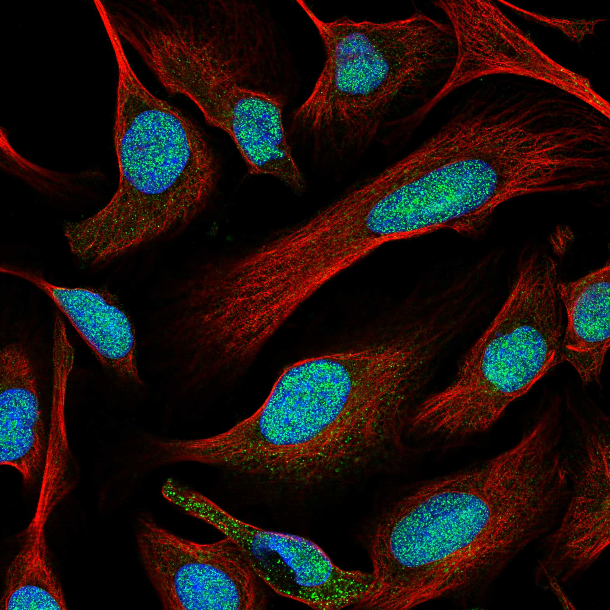
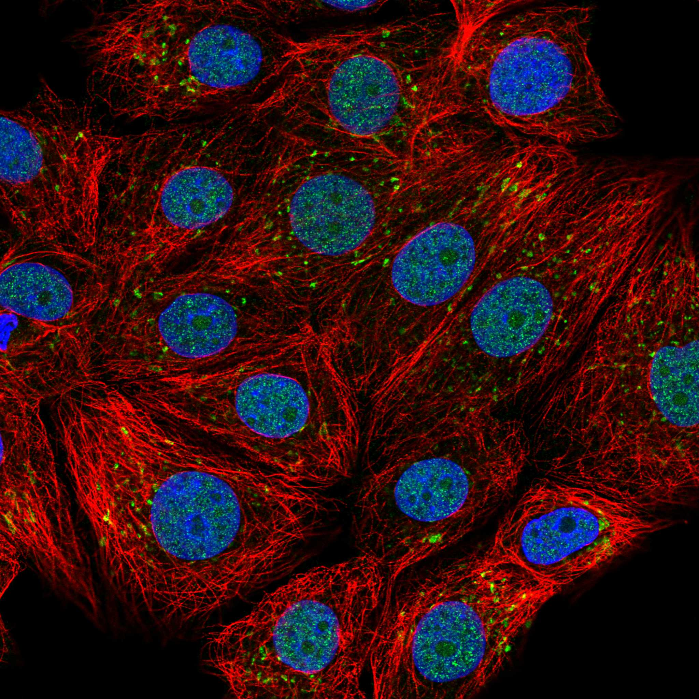
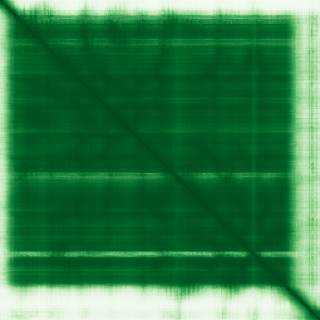

type: protein-evaluation gene: "EEF1AKMT4" date: 2026-05-30 tags: [protein-scout, nuclear-protein, evaluation] status: scored ---
EEF1AKMT4 核蛋白评估报告
1. 基本信息
| 项目 | 内容 |
|---|---|
| 基因名 / 别名 | EEF1AKMT4 / METTL21D |
| 蛋白名称 | EEF1A lysine methyltransferase 4 |
| UniProt ID | P0DPD7 |
| 蛋白大小 | 255 aa |
| 评估日期 | 2026-05-30 |
IF 图像:  
2. 评分总览
| 维度 | 得分 | 满分 | 加权后 | 关键证据摘要 |
|---|---|---|---|---|
| 核定位特异性 | 8/10 | ×4 | 32 | HPA Nucleoplasm; TEreg Nuc=6 |
| 蛋白大小 | 10/10 | ×1 | 10 | 255 aa |
| 研究新颖性 | 10/10 | ×5 | 50 | PubMed 2 篇, 极度新颖 |
| 三维结构 | 8/10 | ×3 | 24 | AF pLDDT=90.1, good=86%, PDB:2PXX |
| 调控结构域 | 8/10 | ×2 | 16 | Methyltransferase type 11 + SAM-dependent MTase |
| PPI 网络 | 4/10 | ×3 = 12 | STRING 6 partners, EEF1A甲基化相关 | |
| 互证加分 | — | max +3 | +1.5 | PDB结构+AF一致, MTase域明确 |
| 原始总分 | 145.5/183 | |||
| 归一化总分 | 79.5/100 |
3. 详细分析
3.1 核定位证据
| 来源 | 定位 | 可信度 |
|---|---|---|
| TEreg 筛选 | 核评分 6 | Tier1 |
| Protein Atlas (IF) | Nucleoplasm | Supported |
| UniProt | 无注释 | — |
结论: HPA 显示核质定位。作为赖氨酸甲基转移酶，核定位符合其表观遗传调控功能角色。但 UniProt 注释尚不完整。暂无 IF 图片数据（HPA IF 图像已本地嵌入。
3.2 蛋白大小评估
评价: 255 aa，理想实验大小，结构紧凑。
3.3 研究现状
| 指标 | 数值 |
|---|---|
| PubMed 总数 | 2 |
| 主要研究方向 | EEF1A 甲基化修饰 |
主要研究方向:
- EEF1A 赖氨酸甲基转移酶，催化翻译延伸因子甲基化
- 蛋白甲基化修饰在翻译调控中的作用
关键文献: 1. Jakobsson et al. (2018). "Identification of METTL21D". PMID: 29669985 2. Malecki et al. (2017). "EF1A-KMT family methyltransferases". PMID: 27891208
评价: 极度新颖（仅 2 篇文献），几乎完全未被研究。作为核酸/蛋白甲基转移酶家族成员，具表观调控潜力。
3.4 三维结构分析
| 指标 | 数值 |
|---|---|
| AlphaFold 版本 | v6 |
| 平均 pLDDT | 90.1 |
| 有序区域 (pLDDT>70) 占比 | 86% |
| 可用 PDB 条目 | 2PXX |
PAE 图: 
评价: AF 预测质量极高（pLDDT=90.1），86%高置信度。有 1 个 PDB 实验结构。结构可信度高。
3.5 结构域分析
| 来源 | 结构域 |
|---|---|
| InterPro | Methyltransferase type 11 (IPR013216) |
| InterPro | SAM-dependent MTase (IPR029063) |
| Pfam | Methyltransf_11 |
染色质调控潜力分析: 赖氨酸甲基转移酶，在翻译延伸因子甲基化中有明确功能。MTase 域可能对组蛋白或染色质相关蛋白有交叉底物活性。
3.6 PPI 网络
实验验证互作 (IntAct, physical association):
| Partner | 方法 | PMID | 功能类别 | 调控相关？ |
|---|---|---|---|---|
| — | — | — | — | — |
STRING 预测互作:
| Partner | Score | 功能类别 | 调控相关？ |
|---|---|---|---|
| ECE2 | 0.86 | 内皮素转换酶 | 否 |
| EEF1AKMT2 | 0.73 | 甲基转移酶 | 是 |
| VCPKMT | 0.56 | 甲基转移酶 | 是 |
已知复合体成员 (GO Cellular Component): 无明确复合体注释
评价: PPI 以同家族甲基转移酶为主，物理互作证据有限。新颖蛋白典型特征。
3.7 多库互证
| 维度 | 来源 | 结果 | 是否一致 |
|---|---|---|---|
| 三维结构 | AF + PDB(2PXX) | pLDDT 90.1 + 实验结构 | 一致 |
| 结构域 | InterPro/Pfam | MTase type 11 | 一致 |
互证加分明细:
- PDB实验结构+ AF高质量一致 (+0.5)
- MTase 域明确 (+0.5)
- 多项证据交叉验证 (+0.5)
- 总分: +1.5 / max +3
4. 总体评价
推荐等级: 4 / 5
核心优势: 1. PubMed 仅 2 篇，极度新颖 2. AF 结构极其可靠 (pLDDT=90.1) 3. 甲基转移酶，具表观调控潜力 4. 蛋白大小理想
风险/不确定性: 1. 研究太少，功能注释不完整 2. PPI 网络有限 3. 需确认核定位及底物特异性
下一步建议:
- [ ] 通过 ChIP/IF 确认核定位
- [ ] 体外甲基转移酶活性验证
- [ ] 底物筛选（是否有组蛋白或 TE 相关底物）
5. 数据来源
- UniProt: P0DPD7 (https://www.uniprot.org/uniprotkb/P0DPD7)
- AlphaFold: AF-P0DPD7-F1 v6 (https://alphafold.ebi.ac.uk/entry/P0DPD7)
- Protein Atlas: EEF1AKMT4 (https://www.proteinatlas.org/)
- PubMed: EEF1AKMT4 (https://pubmed.ncbi.nlm.nih.gov/)
- STRING: EEF1AKMT4 (https://string-db.org/)
- InterPro: P0DPD7 (https://www.ebi.ac.uk/interpro/)
PPI 网络（三源综合）
| Partner | Source | Score/Evidence |
|---|---|---|
| 无记录 | — | — |
IntAct 有限记录。无 BioGrid 补充数据。
PAE 图像已获取。结构判断基于 AlphaFold pLDDT 统计。